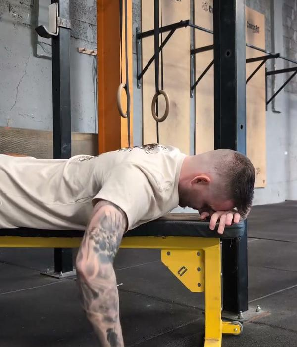

Ton épaule ne lâche pas. Elle se protège.
Ton épaule te dit elle-même quels exercices l'aident. Il suffit de lui poser la question dans le bon ordre.
Quand ton épaule pince, ce n'est pas forcément qu'elle est abîmée. Souvent, elle freine un mouvement qu'elle ne contrôle plus assez bien. Le repos calme la douleur un temps, mais ne lui réapprend rien. Les élastiques au hasard non plus.
Christophe utilise en cabinet une approche simple, la modification de symptômes :
- Un mouvement repère.Celui qui coince : lever le bras, un développé, une traction.
- Un exercice ciblé.Une minute, guidé en vidéo.
- Tu refais le mouvement repère et tu compares.Plus confortable ? Tu gardes l'exercice. Sinon, tu passes au suivant.
En 7 jours, tu construis ta routine d'échauffement avec les exercices qui ont marché pour toi.

Trouve ton mouvement repère
Debout, lève lentement le bras devant toi jusqu'au-dessus de la tête. Note où ça pince, de 0 à 10.
C'est ton point de départ. Dans le programme, tu refais ce geste après chaque exercice : c'est comme ça que tu sais, toi, ce qui marche.